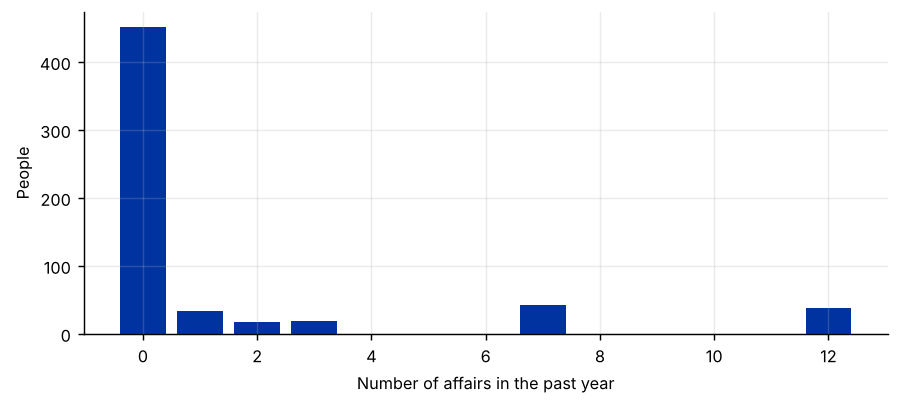

Run this model on your own data in Open Econometric Systems →
Step 1The question and the model
What determines how many extramarital affairs a married person has? Fair (1978) asked 601 people how often they had an affair in the past year. Most (451) had none, so the outcome is zero for three quarters of the sample. The Tobit model says there is a latent propensity \(y^*\) that depends linearly on the regressors, and that we observe it only when it is positive:
The coefficients \(\beta\) are effects on the latent propensity. The effects on the observed number of affairs are smaller, because part of any change in \(y^*\) happens below zero where it is not observed.
| Variable in the file | Definition |
|---|---|
affairs |
number of affairs in the past year (0 to 12) |
age |
age in years |
yearsmarried |
years married |
religiousness |
1 (anti-religious) to 5 (very religious) |
occupation |
occupation index (Hollingshead), 1 to 7 |
rating |
self-rating of the marriage, 1 (very unhappy) to 5 (very happy) |
Before you estimate anything
- Is the outcome censored or simply zero? Tobit fits when the zero hides a negative or small latent value (hours a person would work at the going wage). If the zeros come from a different decision (whether to have an affair at all), a two-part model fits better (Step 6).
- Are the limits known? Tobit needs the censoring point (here 0) for every observation.
- Is normality plausible? The Tobit estimator is inconsistent if the latent error is not normal and homoskedastic, unlike OLS.
How to write it: model section
The number of affairs is censored at zero for 75% of the sample, so we estimate a Tobit model by maximum likelihood, in which the observed number is the larger of zero and a latent propensity that depends linearly on age, years of marriage, religiousness, occupation and the rating of the marriage. We report the effects on the latent propensity and the average marginal effects on the observed number of affairs, and we test the Tobit restriction against a two-part alternative.
Step 2Load the data and look at it first
import warnings; warnings.filterwarnings("ignore")
import numpy as np, pandas as pd
import matplotlib.pyplot as plt
import statsmodels.api as sm
from scipy import stats, optimize
d = pd.read_csv("affairs.csv")
xs = ["age", "yearsmarried", "religiousness", "occupation", "rating"]
print(f"{len(d)} people; {int((d.affairs == 0).sum())} ({(d.affairs == 0).mean():.0%}) report no affair")
print(d.affairs.value_counts().sort_index().rename("people").to_frame().T.to_string())
print("\nMean of the regressors, by whether the person had an affair")
print(d.groupby(d.affairs > 0)[xs].mean().round(2).rename(index={False: "no affair", True: "had an affair"}).T)
fig, ax = plt.subplots(figsize=(7, 3.2))
ax.bar(d.affairs.value_counts().sort_index().index, d.affairs.value_counts().sort_index().values, color="#0033a0")
ax.set_xlabel("Number of affairs in the past year"); ax.set_ylabel("People")
plt.tight_layout()601 people; 451 (75%) report no affair affairs 0 1 2 3 7 12 people 451 34 17 19 42 38 Mean of the regressors, by whether the person had an affair affairs no affair had an affair age 32.18 33.41 yearsmarried 7.73 9.53 religiousness 3.20 2.85 occupation 4.16 4.31 rating 4.09 3.45

How to read it
The distribution has a spike at zero (451 of 601 people) and a long right tail, which is why a linear regression is a poor description. People who had an affair rate their marriage lower on average and are less religious: the question for the model is how large these differences are after the regressors are held fixed.
Step 3Why not OLS, and why not drop the zeros?
Y = d.affairs.values.astype(float)
X = sm.add_constant(d[xs])
ols = sm.OLS(Y, X).fit(cov_type="HC1")
pos = d.affairs > 0
ols_pos = sm.OLS(Y[pos], X[pos]).fit(cov_type="HC1")
print(pd.DataFrame({"OLS, all observations": ols.params, "OLS, positive only": ols_pos.params}).round(3).to_string())
print(f"\nOLS predicts {int((ols.fittedvalues < 0).sum())} negative numbers of affairs")OLS, all observations OLS, positive only const 5.608 8.577 age -0.050 -0.038 yearsmarried 0.162 0.264 religiousness -0.476 -0.709 occupation 0.106 0.073 rating -0.712 -0.663 OLS predicts 60 negative numbers of affairs
How to read it
OLS on all 601 observations is biased toward zero because the zeros are not the values of the latent propensity: it gives −0.05 for age and −0.71 for the marriage rating. Dropping the zeros ("OLS, positive only") is biased too, in a different way: it keeps only people with a high enough latent value, which selects on the outcome and moves the slopes in unpredictable directions (years married 0.26 against 0.16, religiousness −0.71 against −0.48). It also throws away 75% of the data, and OLS predicts a negative number of affairs for 60 people. The Tobit estimator uses both the zeros and the positive values.
Step 4The Tobit model
Xn = X.to_numpy(float)
def nll(t, Xn=Xn, Y=Y):
b, ls = t[:-1], t[-1]; s = np.exp(ls); xb = Xn @ b; c = Y <= 0
return -(stats.norm.logcdf(-xb[c] / s).sum() + (stats.norm.logpdf((Y[~c] - xb[~c]) / s) - ls).sum())
start = np.r_[np.linalg.lstsq(Xn, Y, rcond=None)[0], np.log(Y.std())]
opt = optimize.minimize(nll, start, method="BFGS", options={"gtol": 1e-8})
from statsmodels.tools.numdiff import approx_hess
V = np.linalg.inv(approx_hess(opt.x, nll))
b, ls = opt.x[:-1], opt.x[-1]; s = np.exp(ls)
se = np.sqrt(np.diag(V))
tab = pd.DataFrame({"coef": b, "std err": se[:-1], "z": b / se[:-1], "p-value": 2 * stats.norm.sf(abs(b / se[:-1]))}, index=X.columns)
print(tab.round(4).to_string())
print(f"\nsigma = {s:.3f} (std err {s * se[-1]:.3f}); log-likelihood = {-opt.fun:.3f}")
ll0 = -optimize.minimize(lambda u: nll(u, Xn[:, :1]), [Y.mean(), np.log(Y.std())], method="BFGS").fun
lr = 2 * (-opt.fun - ll0)
print(f"Likelihood-ratio test that all slopes are zero: chi2(5) = {lr:.1f}, p = {stats.chi2.sf(lr, 5):.2e}")
print("\nTobit / OLS coefficient ratio:", (tab.coef[1:] / ols.params[1:]).round(2).to_dict()) coef std err z p-value
const 8.1742 2.7414 2.9817 0.0029
age -0.1793 0.0791 -2.2674 0.0234
yearsmarried 0.5541 0.1345 4.1195 0.0000
religiousness -1.6862 0.4038 -4.1764 0.0000
occupation 0.3261 0.2544 1.2815 0.2000
rating -2.2850 0.4078 -5.6028 0.0000
sigma = 8.247 (std err 0.553); log-likelihood = -705.576
Likelihood-ratio test that all slopes are zero: chi2(5) = 78.3, p = 1.88e-15
Tobit / OLS coefficient ratio: {'age': 3.56, 'yearsmarried': 3.42, 'religiousness': 3.54, 'occupation': 3.08, 'rating': 3.21}How to read it
The coefficients are effects on the latent propensity. A marriage rating one point higher lowers it by 2.28 (z = −5.6), one more year of marriage raises it by 0.55, one more point of religiousness lowers it by 1.69, and age lowers it by 0.18 per year; occupation has no significant effect (p = 0.20). Estimated sigma is 8.2, large compared with the observed range, which says that the latent propensity varies a great deal among people with the same characteristics. The Tobit slopes are three to three and a half times the OLS slopes, the usual attenuation of OLS on censored data. The coefficients themselves are not the answer to "how many affairs fewer", which is the next step.
Step 5Marginal effects on the observed outcome
# E[y | x] = Phi(xb/s) * xb + s * phi(xb/s) for a Tobit censored at zero; the marginal effect of x_k on E[y] is b_k * Phi(xb/s)
xb = Xn @ b
pu = stats.norm.cdf(xb / s)
Ey = pu * xb + s * stats.norm.pdf(xb / s)
lam = stats.norm.pdf(xb / s) / pu
Ey_pos = xb + s * lam # E[y | y > 0, x]
d_pos = (1 - lam * (xb / s + lam)) # derivative of E[y | y > 0] with respect to xb
me = pd.DataFrame({"latent b": b[1:], "uncensored b*(1 - l(xb/s + l))": b[1:] * d_pos.mean(), "observed b*Phi(xb/s)": b[1:] * pu.mean()}, index=xs)
print(f"Average probability of being uncensored (y > 0) = {pu.mean():.3f} (observed share = {(Y > 0).mean():.3f})")
print(me.round(3).to_string())
print(f"\nAverage predicted number of affairs = {Ey.mean():.3f}; observed = {Y.mean():.3f}")
# Compare with the OLS slopes: the OLS coefficient is close to the Tobit effect on the OBSERVED outcome
print("\nOLS slope against Tobit observed-outcome effect:")
print(pd.DataFrame({"OLS": ols.params[1:], "Tobit, observed": b[1:] * pu.mean()}).round(3).to_string())Average probability of being uncensored (y > 0) = 0.256 (observed share = 0.250)
latent b uncensored b*(1 - l(xb/s + l)) observed b*Phi(xb/s)
age -0.179 -0.044 -0.046
yearsmarried 0.554 0.136 0.142
religiousness -1.686 -0.413 -0.431
occupation 0.326 0.080 0.083
rating -2.285 -0.560 -0.585
Average predicted number of affairs = 1.419; observed = 1.456
OLS slope against Tobit observed-outcome effect:
OLS Tobit, observed
age -0.050 -0.046
yearsmarried 0.162 0.142
religiousness -0.476 -0.431
occupation 0.106 0.083
rating -0.712 -0.585How to read it
The effect on the observed number of affairs is the latent coefficient times the average probability that a person is uncensored (0.26): one more point of marital rating lowers the expected number of affairs by 0.585, and one more year of marriage raises it by 0.14. This is the McDonald-Moffitt decomposition: the change in the expected outcome has one part that works through the probability of having an affair at all and one part that works through how many, if any. The effect on the number among those who have affairs is 0.24 of the latent coefficient. Note that these OLS-like effects are close to the OLS slopes (−0.585 against −0.71 for the rating), which explains why OLS is often a good approximation of the average effect on the observed outcome, but not of the latent one.
How to write it: main result
A one-point higher rating of the marriage lowers the latent propensity to have affairs by 2.28 (standard error 0.41) and the expected number of affairs by 0.585 per year (average marginal effect). Each additional year of marriage raises the expected number by 0.14, and each point of religiousness lowers it by 0.43. Age and occupation have small effects. The Tobit slopes are about three times the OLS slopes on the same data, as expected when 75% of the outcome is censored.
Step 6Is the Tobit restriction credible? A two-part check
# Tobit forces one process for 'whether' and 'how many'. Cragg's alternative: a probit for y > 0 and a truncated normal regression for y | y > 0.
pr = sm.Probit((Y > 0).astype(int), X).fit(disp=0)
Xp, Yp = Xn[pos], Y[pos]
def nll_tr(t):
bb, ls_ = t[:-1], t[-1]; ss = np.exp(ls_); m = Xp @ bb
return -(stats.norm.logpdf((Yp - m) / ss) - ls_ - stats.norm.logcdf(m / ss)).sum()
tr = optimize.minimize(nll_tr, np.r_[np.linalg.lstsq(Xp, Yp, rcond=None)[0], np.log(Yp.std())], method="BFGS", options={"gtol": 1e-8})
ll_two = pr.llf + (-tr.fun)
lr_c = 2 * (ll_two - (-opt.fun))
print(f"Log-likelihood: Tobit = {-opt.fun:.2f}; probit + truncated regression = {ll_two:.2f}")
print(f"LR test of the Tobit restriction: chi2(6) = {lr_c:.2f}, p = {stats.chi2.sf(lr_c, 6):.3f}")
print("\nTobit coefficient / sigma against probit coefficient (equal under the Tobit restriction):")
print(pd.DataFrame({"Tobit b/sigma": b / s, "probit": pr.params.values}, index=X.columns).round(3).to_string())Log-likelihood: Tobit = -705.58; probit + truncated regression = -700.01
LR test of the Tobit restriction: chi2(6) = 11.14, p = 0.084
Tobit coefficient / sigma against probit coefficient (equal under the Tobit restriction):
Tobit b/sigma probit
const 0.991 0.977
age -0.022 -0.022
yearsmarried 0.067 0.060
religiousness -0.204 -0.184
occupation 0.040 0.038
rating -0.277 -0.273How to read it
Under the Tobit model the probit for "any affair" has coefficients equal to \(\beta/\sigma\), and the truncated regression for the positive values has coefficients \(\beta\). Cragg's likelihood-ratio test compares the Tobit with the two-part model that lets these differ. It does not reject at the 5% level, although only just (chi-squared 11.1 on 6 degrees of freedom, p = 0.084), and the probit coefficients are close to \(\beta/\sigma\). The data are therefore broadly consistent with a single process for whether and how many, and Tobit is an acceptable model here, with the borderline p-value worth reporting. When the test rejects, use a hurdle (two-part) model or a Heckman selection model.
Step 7What to report in the paper
Report the number of observations and of censored observations; the Tobit coefficients and sigma with standard errors, saying that they are effects on the latent outcome; the average marginal effects on the observed outcome (and, if needed, the conditional effect); the likelihood-ratio test; a comparison with OLS; and the test of the Tobit restriction.
How to write it: results and robustness
Table 1 reports the Tobit estimates for 601 people, 451 of whom report no affair. The model is jointly significant (likelihood-ratio chi-squared of 78.3 with 5 degrees of freedom). Cragg's likelihood-ratio test of the Tobit restriction against a probit plus truncated-regression alternative does not reject at the 5% level (chi-squared 11.1, p = 0.084), and the probit coefficients are close to the Tobit coefficients divided by sigma, so we maintain the Tobit specification and note that the evidence is borderline. The OLS estimates are about one third of the Tobit slopes, as expected for a censored outcome.
Step 8Common mistakes
Mistakes to avoid
- Reading a Tobit coefficient as the effect on the observed outcome. It is the effect on the latent variable. Multiply by the probability of being uncensored, or report the marginal effects.
- Using Tobit for a corner solution with a different process. If the zero comes from a separate decision, use a hurdle or two-part model (Cragg test).
- Dropping the zeros and running OLS on the rest. It selects on the outcome and biases the slopes.
- Ignoring non-normality and heteroskedasticity. Tobit is inconsistent if the latent error is not normal and homoskedastic. Check with Cragg's test, with a different link, or use censored least absolute deviations.
- Mixing censoring and truncation. In censored data the zeros are observed; in truncated data the observations below the limit are missing. The estimators differ.
- Forgetting an upper limit. If the outcome is also capped (a maximum rating), specify both limits.
- Comparing the sigma of a Tobit and of OLS. Sigma is the scale of the latent error, not the residual standard deviation of the observed outcome.